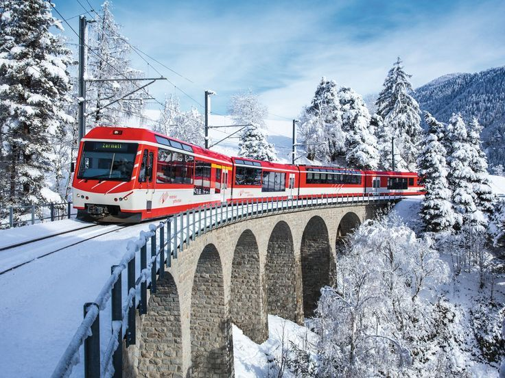
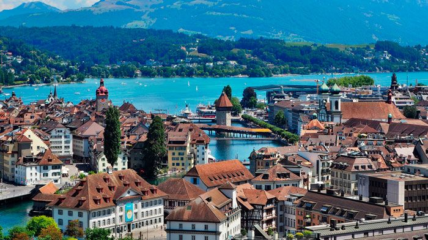

Suiza es uno de los destinos turísticos más impresionantes de Europa. Sus paisajes naturales, montañas nevadas, lagos cristalinos y ciudades modernas hacen que millones de turistas visiten este país cada año. Viajar por Suiza es como entrar a una postal gigante llena de naturaleza, tranquilidad y cultura.
El turismo en Suiza es conocido por sus impresionantes Alpes Suizos, donde las personas practican esquí, snowboard y senderismo. Además, los turistas disfrutan viajar en trenes panorámicos que cruzan montañas, túneles y lagos increíbles.
Las ciudades suizas también son muy visitadas por su limpieza, seguridad y arquitectura. Cada rincón del país combina naturaleza y modernidad, creando lugares únicos y muy hermosos.
Los Alpes Suizos son famosos por sus enormes montañas cubiertas de nieve. Son perfectos para practicar deportes extremos, tomar fotografías y disfrutar de paisajes espectaculares.

Los trenes suizos permiten recorrer el país mientras se observan montañas, lagos y pueblos hermosos. Son considerados algunos de los mejores trenes turísticos del mundo.

Ciudades como Zúrich, Ginebra y Berna son conocidas por sus edificios modernos, calles limpias y una gran calidad de vida. También poseen museos y lugares históricos.